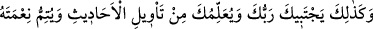
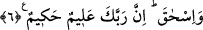

atan ve insan nev’i için her türlü tuzağı hazırlayacağına yemin eden, onları dâima en
zararlı olana iten şeytandır. Hâlen de insanları sapıtmak için çalışmaya devam
etmektedir.
Yâkub (a.s.)’ın Yûsuf’a koyduğu bu yasaktan, Yûsuf’un kardeşlerinin de rüyâ
yorumunu bildikleri ortaya çıkıyor. Onun için Yâkub (a.s.) bu sözü söylemiştir.
Âriflerden biri şöyle der: “Yâkub (a.s.) kendi çocuklarını böyle bir tuzağı
hazırlamaktan uzak bularak bu suçu şeytana yükledi. Çünkü o bütün fiillerin Allah’tan
olduğunu biliyordu. Şeytan, Mudıl/dalâlete düşüren isminin mazharı olduğu için de
tuzak hazırlamaya sebep olan fiili şeytana izâfe etti. Bu fiili ona izâfe etmek de esâsen
bir tuzak ve mekrdir. Çünkü hakîkatte fâil, dalâlete düşürme fiilinin mazharı olan şeytan
değil Allah Teâlâ’dır.
Hak fâildir, Hak’dan başka ne varsa vâsıtadır
Vâsıtaların te’sir etmesi ise muhaldir
6. “İşte böylece Rabbin seni seçecek, sana rüyaların yorumunu öğretecek ve
daha önce iki atan İbrahim ve İshak’a nimetini tamamladığı gibi sana ve Yâkub
soyuna da nimetini tamamlayacaktır. Çünkü Rabbin çok iyi bilendir, hikmet
sahibidir.”
“İşte böylece” yani senin şerefine, değer ve büyüklüğüne delâlet eden bu rüyâ için
kardeşlerin arasından seni tercih edip seçtiği gibi “Rabbin seni seçecek” peygamberlik
gibi bu rüyâdan daha büyük bir husus için seni tercih edip seçecek, bu rüyânın
doğruluğunu şehâdet âleminde ibraz edecek. Çünkü dünyanın tamamı hayâlden ibaret
olsa da misâl âleminde görülen her suretin şehâdet âleminde gerçekleşecek bir hakîkati
vardır. Bu konu ileride incelenecektir.
Cihânın cümle hayâlini yakîn gözünün nûruyla
Hakîkat denizinin yanında serap görürüm
“Sana rüyaların yorumunu” yani rûyâ tabiri ile ilgili ilimlerden “öğretecek” ve sen
bu dediklerimin gerçek olduğunu kavrayacaksın. Çünkü Allah Teâlâ böyle bir rüyâ
görmeye muvaffak kıldığı kimseyi, mutlaka onu tâbir etmeye de muvaffak kılacaktır.
Çünkü tâbir ilmi, genellikle seçilmiş olmanın ayrılmaz vasıflarındandır.